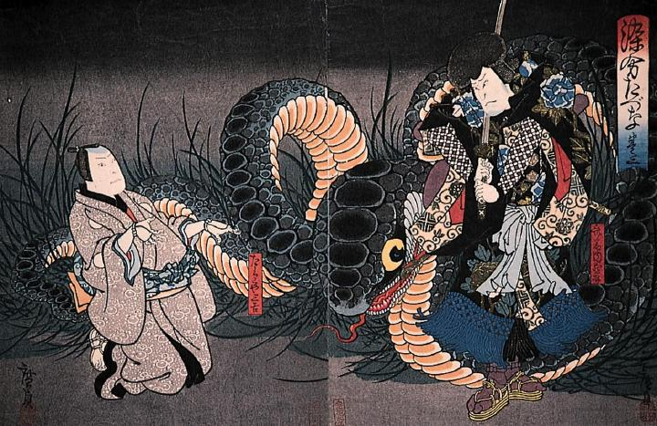

三吉の前に現れた大蛇。頭の大きさは人の上半身ほどもある。草むらにいて赤い舌を出している。
著作者：五粽亭広貞／出典：親書誌：M80_naprstek_0002：染分たづな；ソメワケタヅナ／日付：2011／資源識別子：M80_naprstek_0002_0001_0000
Copyright (c)2010- International Research Center for Japanese Studies, Kyoto, Japan. All rights reserved.